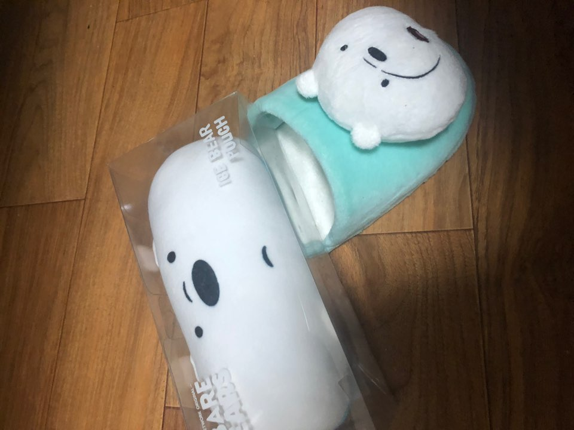
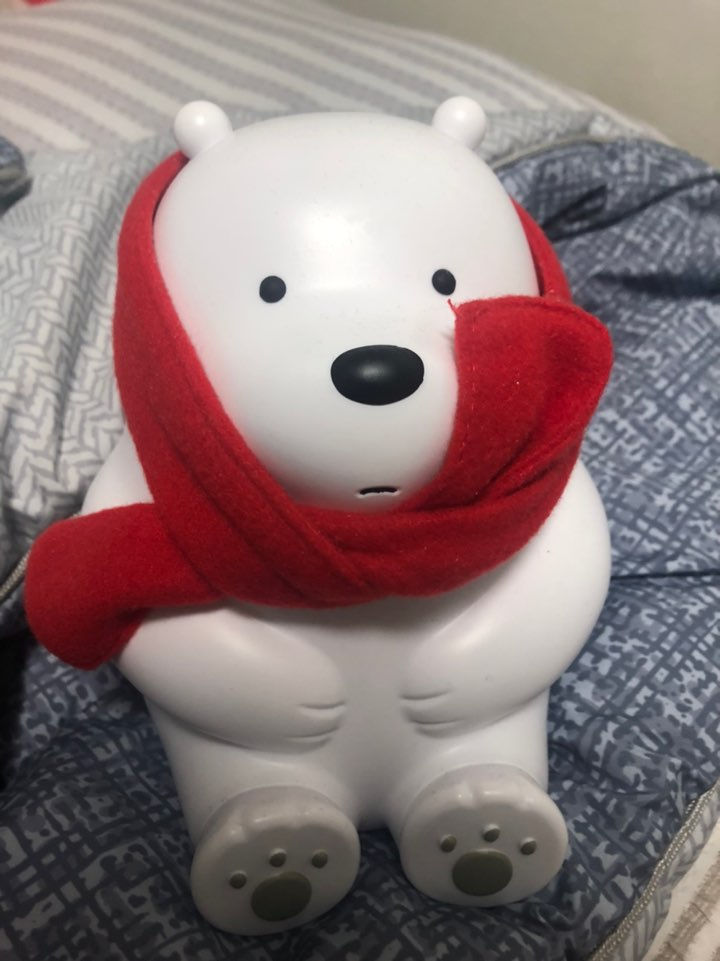
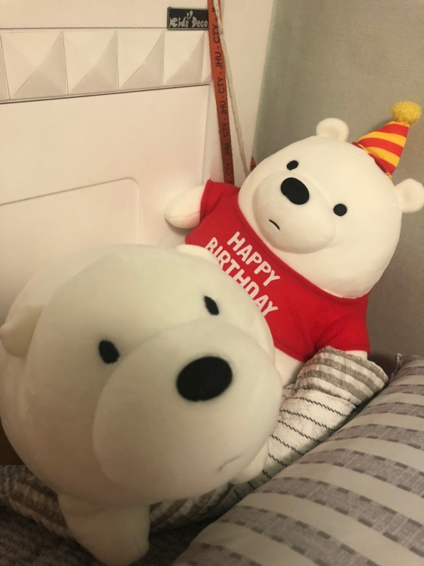

토익
오픽
한국사자격증
봉사활동
코딩공부
>> 코딩 공부...분발하자!!!
나는 아이스베어를 덕질 중이다...손거울, 에코백, 무드등, 인형... 등 엄청 많은 굿즈를 가지고 있다...
  50일간 유럽에서 여행을 하면서 소중한 추억을 만들었다.
이번 여름방학에 스페인, 포르투갈을 1달 동안 가기 위해서 비행기표를 구매하였지만...
코로나로 인해 환불하여 가지 못하게 되었다... 너무 슬프다